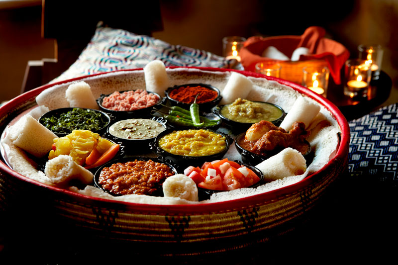

Yetsom Beyaynetu (Vegetarian Combination Platter)
Shiro Wat
Ingredients
- 1-2 tablespoons olive oil
- ½ onion, chopped
- 4 cloves garlic, minced
- 4-5 cups water, or more
- ½ cup shiro
Preparation
- Saute onions until translucent
- add garlic. Add 4 cups water and bring to a boil.
- Add shiro powder, whisk until dissolved.
-
Cook for 35-45 minutes, adding more boiled water to thin
the consistency, if necessary.
- The consistency should not be sticky of clumpy.
Miser Wat
Ingredients
- 1-2 tablespoons olive oil
- 1 onion, diced
- 2 teaspoons – 1 tablespoon or more berbere
- 4-5 cloves garlic, crushed
- 1 cup red lentils, rinsed and drained
- 3-4 cups water
- salt
Preparation
-
Heat oil in a sauce pan and sauté onions until
translucent.
-
Add berbere and stir until well coated. Add garlic and
cook until flavors have melded, about 5 minutes.
-
Add a little water to blend, then add lentils and stir
until well coated.
- Add ½ teaspoon salt and 3 cups of water.
-
Cook until lentils have broken apart, adding more water
if necessary.
- The consistency should be like a thick stew.
- Taste and adjust for salt.